1. Tölur og föll
Nauðsynleg undirstaða
Fly, you fools.
- Gandalf, The Fellowship of the Ring
1.1. Inngangur
1.1.1. Grunnhugmyndin
Stærðfræðigreining grundvallast á því að mæla breytingu (oft með tilliti til tíma)
Eðlisfræði: hraði, hröðun, massi, orka, vinna, afl, þrýstingur
Rúmfræði: flatarmál, rúmmál, lengd, massamiðja
Hagnýtingar: hagfræði, stofnstærðir, hámörkun/lágmörkun, hreyfikerfi, hitaflæði
Stærðfræði: markgildi, hermun, jafnvægisástand
Sett fram samtímis, en óháð, af Isaac Newton og Gottfried Leibniz í lok 17. aldar.
{kind=link}
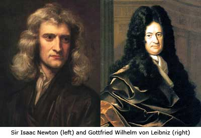
1.1.2. Ítarefni
Fyrir nánari útlistun á hugtökunum sem við fjöllum um þá er hægt að skoða, auk kennslubókarinnar,
http://stae.is/os, íslensk-ensk og ensk-íslensk orðaskrá
http://en.wikipedia.org (ath. enska útgáfan)
Einnig getur verið gagnlegt að kannast við grísku bókstafina.
{kind=link}
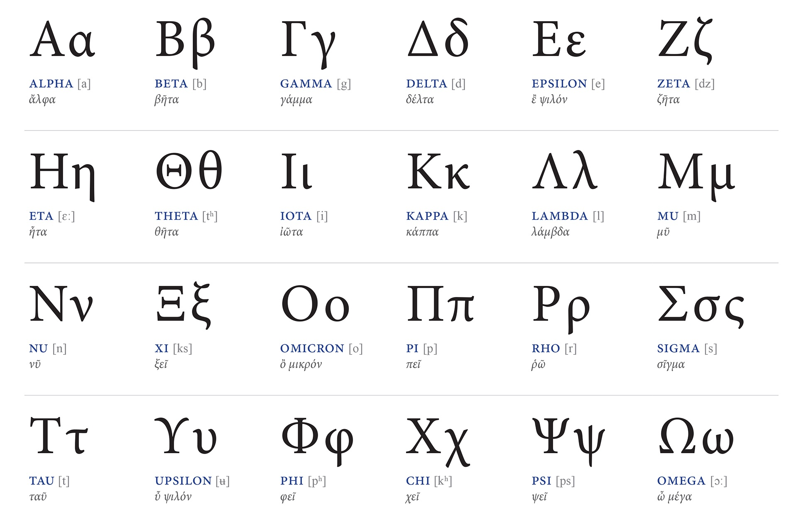
1.1.3. Forrit
GeoGebra http://www.geogebra.org
WolframAlpha http://www.wolframalpha.com
Matlab http://www.mathworks.com (sjá https://admonitionndur.hi.is/~jonasson/matlab/)
Octave http://www.gnu.org/software/octave/ (opið og ókeypis, svipað og Matlab)
Sage http://www.sagemath.org/ (opið og ókeypis, byggt á Python)
Mathematica http://www.wolfram.com/mathematica/
1.2. Tölur
1.2.1. Skilgreining: Tölur
Skilgreining
Náttúrlegu tölurnar
Ekki fannst þýðing á hugtakinu: náttúrleg tala eru tölurnar \(1, 2, 3, 4, \ldots\) og mengi þeirra er táknað með \(\mathbb{N}\).Mengi heiltalna en: integer, integral number, rational integer, whole number
Smelltu fyrir ítarlegri þýðingu.Mengi ræðra talna en: rational number
Smelltu fyrir ítarlegri þýðingu.Mengi rauntalna en: real number
Smelltu fyrir ítarlegri þýðingu.Mengi tvinntalna en: complex number
Smelltu fyrir ítarlegri þýðingu.
Athugasemd
Margir vilja telja \(0\) með sem náttúrlega tölu. Það er eðlilegt ef maður lítur á náttúrlegu tölurnar þannig að þær tákni fjölda. Ef maður lítur hins vegar þannig á að þær séu notaðar til að númera hluti þá er 0 ekki með. Hér verður 0 ekki talið með náttúrulegu tölunum en notast verður við \(\mathbb{N}_0 = 0,1,2,3,\ldots\) fyrir mengi náttúrulegra talna að 0 viðbættu.
Sjá einnig http://edbook.hi.is/undirbuningur_stae/Kafli1.html#talnakerfi.
1.2.2. Smíði rauntalna
Rauntölur eru smíðaðar úr ræðu tölunum með því að fylla upp í götin.
T.d. eru
ekki ræðar tölur (það er ekki hægt að skrifa þær sem brot
\(\frac ab\), þar sem \(a\) og \(b\) eru heilar tölur), en
þær eru rauntölur. Slíkar tölur kallast
óræðar
en: irrational number
Smelltu fyrir ítarlegri þýðingu.
Sjá einnig Óræðar tölur | stæ.is.
1.3. Bil
1.3.1. Skilgreining: Bil (i)
Skilgreining
Látum \(a\) og \(b\) vera rauntölur þannig að \(a<b\). Skilgreinum
opið bil \(]a,b[=\{x\in \mathbb{R}; a<x<b\}\)
lokað bil \([a,b]=\{x\in \mathbb{R}; a\leq x\leq b\}\)
hálfopið bil \([a,b[=\{x\in \mathbb{R}; a\leq x<b\}\)
hálfopið bil \(]a,b]=\{x\in \mathbb{R}; a< x\leq b\}\)
Þessi bil sem er skilgreind hér fyrir ofan eru kölluð endanleg. Til eru fleiri gerðir af bilum:
opið óendanlegt bil \(]a,\infty[=\{x\in \mathbb{R}; a<x\}\)
opið óendanlegt bil \(]-\infty, a[=\{x\in \mathbb{R}; x<a\}\)
lokað óendanlegt bil \([a,\infty[=\{x\in \mathbb{R}; a\leq x\}\)
lokað óendanlegt bil \(]-\infty, a]=\{x\in \mathbb{R}; x\leq a\}\)
allur rauntalnaásinn \(]-\infty, \infty[= \mathbb{R}\).
1.3.2. Skilgreining: Bil (ii)
Skilgreining
Mengi \(A\) af rauntölum kallast
bil
en: interval
Smelltu fyrir ítarlegri þýðingu.
Athugasemd
Sérhvert bil á rauntalnaásnum er af einni þeirra gerða sem talin er upp í Skilgreining 1.3.1. Þessi staðhæfing er jafngild frumsendunni um efra mark.
Athugasemd
Það er jafngilt að segja
\[x \in ]a-\eta,a+\eta[\]og
\[|x-a| < \eta.\]
1.4. Föll
1.4.1. Skilgreining: Vörpun
Skilgreing
Vörpun
en: mapping, record, transform, transformation
Smelltu fyrir ítarlegri þýðingu.
Stakið \(f(x)\) kallast
gildi
en: image, value
Smelltu fyrir ítarlegri þýðingu.
1.4.2. Skilgreining: skilgreiningarmengi og bakmengi
Skilgreining
Mengið \(X\) kallast
skilgreiningarmengi
en: argument domain, domain, domain carrier, index set, latent domain, range of arguments, set of definition, source
Smelltu fyrir ítarlegri þýðingu.
Smelltu fyrir ítarlegri þýðingu.
Smelltu fyrir ítarlegri þýðingu.
{kind=link}
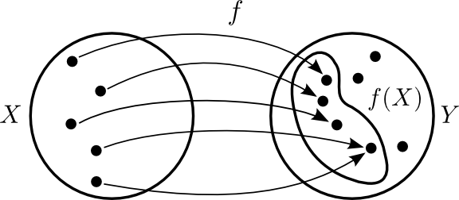
Aðvörun
Það er ekki víst að öll gildin í \(Y\) séu tekin (það er \(f(X)\) getur verið minna en \(Y\)). Eins þá er mögulegt að \(f\) taki sama gildið oftar en einu sinni.
1.4.3. Skilgreining: fall
Skilgreining
Fall er þrennd \((f,X,Y)\) þar sem \(f\) er vörpun sem uppfyllir að sérhvert stak \(x\) í skilgreiningarmenginu \(X\) varpast á eitt og aðeins eitt stak \(y\) í bakmenginu \(Y\).
1.4.4. Skilgreining: Samskeyting
Skilgreining
Látum \(f:X \to Y\) og \(g:Y \to Z\) vera
varpanir. Vörpunin \(g\circ f:X \to Z\) sem skilgreind er með
\((g\circ f)(x)=g(f(x))\) kallast
samskeyting
en: composite
Smelltu fyrir ítarlegri þýðingu.
{kind=link}
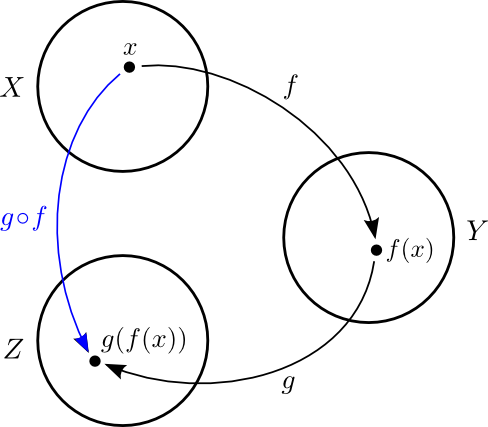
1.4.5. Dæmi: Samskeyting
Dæmi
Skoðum föllin \(f:\mathbb R \to \mathbb R, f(x) = 2x-1\) og \(g:\mathbb R \to \mathbb R, g(x) = x^2\). Finnum \(g\circ f(x)\).
Lausn
Höfum að
Athugið að samskeytingin \(f \circ g\) er ekki sama fallið:
1.4.6. Skilgreining: Átækni og eintækni
Skilgreining
Við segjum að vörpunin \(f\) sé
átæk
en: surjective, onto
Smelltu fyrir ítarlegri þýðingu.
Segjum að vörpunin \(f\) sé
eintæk
1.4.7. Skilgreining: Gagntækni
Skilgreining
Vörpun sem er bæði eintæk og átæk kallast
gagntæk
1.4.8. Skilgreining: Andhverfa
Skilgreining
Látum \(f:X \to Y\) vera vörpun. Sagt er að \(f\)
sé
andhverfanleg
en: invertible, non-singular
Smelltu fyrir ítarlegri þýðingu.
Smelltu fyrir ítarlegri þýðingu.
{kind=link}
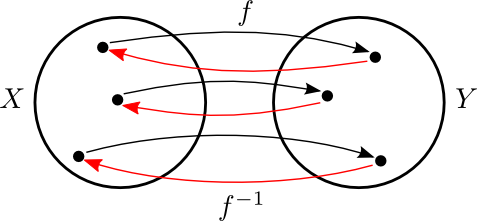
Athugasemd
Venjulega hjá okkur þá eru mengin \(X\) og \(Y\) mengi af rauntölum. Þegar \(Y\) er mengi af tölum þá er notast við orðið fall en: function
í stað orðsins vörpun.
Smelltu fyrir ítarlegri þýðingu.
Athugasemd
Til þess að fall sé andhverfanlegt þarf það að vera gagntækt.
1.4.9. Dæmi: Andhverfa
Dæmi
Látum \(X=[0,2]\), \(Y=[0,4]\) og \(f:X \to Y, f(x) = x^2\). Finnum andhverfu fallsins.
Lausn
Þar sem \(f\) er gagntæk vörpun er andhverfan til og er gefin með \(f^{-1}(x) = \sqrt x\).
{kind=link}
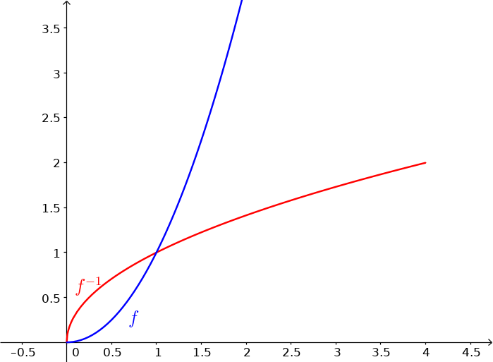
Athugum að hér má velja \(X\) sem önnur mengi en \([0,2]\) svo lengi sem \(X\) inniheldur ekki bæði \(a\) og \(-a\), \(a\neq 0\), því þá er \(f\) ekki lengur eintæk. Mengið \(Y\) yrði svo valið sem myndmengið \(f(X)\).
1.4.10. Skilgreining: Graf
Skilgreining
Látum \(f:X \to Y\) vera fall þannig að \(X\) og \(Y\) eru mengi af rauntölum. Graf (e. graph) fallsins \(f\) er þá mengi allra punkta í planinu \(\mathbb{R}^2\) af gerðinni \((x,f(x))\) þar sem \(x\in X\). Hér notum við oft \(y\) í stað \(f(x)\).
1.4.11. Skilgreining: Jafnstætt og oddstætt
Skilgreining
Við segjum að fall \(f\) sé
jafnstætt
en: even
Smelltu fyrir ítarlegri þýðingu.
fyrir öll \(x\) í skilgreiningarmengi \(f\).
Við segjum að fall \(f\) sé
oddstætt
en: odd
Smelltu fyrir ítarlegri þýðingu.
fyrir öll \(x\) í skilgreiningarmengi \(f\).
{kind=link}
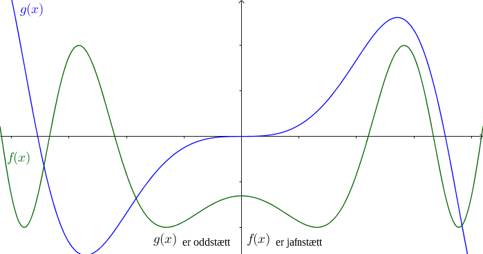
1.5. Nokkrar gerðir falla
Til eru margs konar föll og eru þau oft sett í flokk eftir eiginleikum sínum. Lítum á þá helstu.
1.5.1. Línuleg föll
Línulegt fall hefur formið \(f(x)=hx+k\) og graf þess er lína. Þetta form er stundum kallað skurðhallaform línunnar. Við köllum fastann \(h\) hallatölu línunnar og fastann \(k\) skurðpunkt hennar við \(y\)-ás. Ef \(h>0\) þá er línan vaxandi en ef \(h<0\) þá er hún minnkandi. Í þeim tilfellum sem \(h=0\) er línan sögð hafa engan halla, þ.e. hún er hvorki vaxandi né minnkandi og liggur þá lárétt í hnitakerfinu. Lóðréttarlínur eru ávallt á forminu \(x=b\) og hafa óskilgreinda hallatölu. Þær skera \(x\)-ásinn í \(b\).
Hallatölu línu má ávallt finna ef þekktir eru tveir, mismunandi punktar \((x_1,y_1)\) og \((x_2,y_2)\) sem liggja á henni. Þá má nota formúluna
til að ákvarða hallatölu hennar. Sé formúlan skoðuð má sjá að hún lýsir fjarlægð á milli y-hnita tveggja punkta á línunni í hlutfalli við fjarlægð á milli \(x\)-hnita þeirra. Þetta er hlutfall helst það sama, óháð því hvaða punktar eru valdir. Því er stundum ritað að
þar sem \(\Delta y\) táknar fjarlægð milli \(y\)-hnita punktanna og \(\Delta x\) táknar fjarlægð milli \(x\)-hnita punktanna.
Stundum er framsetningin
notast og kallast hún punkthallaform línunnar. Hún er bein afleiðing af hallatölujöfnunni þar sem hún er sett fram sem
sem er algjörlega sambærilegt jöfnunni hér að ofan, þar sem \(x_2=x\) og \(y_2 = f(x)\). Þriðja og síðasta framsetningin á jöfnu línu er nefnt staðalform hennar og er línan þá sett fram með
þar sem \(a,b \in \mathbb{R}\) og eru ekki bæði 0. Þetta form er almennara þar sem það gerir einnig ráð fyrir lóðréttum línum.
Athugasemd
Skurðhallaform línu: \(y=hx+k\)
Punkthallaform línu: \(f(x) - y_1 = h(x-x_1)\)
Staðalform línu: \(ax+by=c\)
Dragðu stikuna til og frá til að sjá hvernig línan breytist við það að breyta hallatölunni, \(a\) og skurðpunktinum við \(y\)-ás, \(b\).
1.5.2. Margliður
Línuleg föll eru sértilfelli af breiðari flokki falla sem nefnist margliður. Margliður hafa almenna formið
þar sem talan \(n\in \mathbb{N}_0\) nefnist stig margliðunnar, \(a_i\), \(i = 1, \ldots , n\) eru fastar og forystustuðullinn \(a_n \neq 0\). Þegar \(a_n = 0\) þá leyfum við tilfellið \(a_0=0\) og köllum þá fallið \(f(x)=0\) núllfallið.
Margliða af núlta stigi er einnig stundum kölluð fastafall. Línur eru fyrsta stigs margliður þar sem \(n=1\) og forystustuðullinn \(a_n\) er hallatala línunnar. Margliða af öðru stigi kallast ferningsfall og er graf hennar fleygbogi. Fyrir fleygboga gildir að sé \(a_n>0\) þá er fleygboginn kúptur (uppsveigður) en ef \(a_n<0\) þá er hann hvelfdur (niðursveigður).
1.5.3. Veldisföll
Fall á forminu
þar sem \(a,n\in \mathbb{R}\) nefnist veldisfall. Í því tilfelli sem \(n \in \mathbb{N}_0\) (þ.e.a.s \(n\) er einhver náttúruleg tala eða 0) og \(a \neq 0\) þá er veldisfallið margliða af \(n\)-ta stigi þar sem allir stuðlar nema forystustuðullinn eru 0, þ.e. \(a_{n-1}=a_{n-2} = \ldots =a_0 = 0\). Ef \(n\) er slétt tala þá er fallið \(f(x)\) jafnstætt en oddstætt ef \(n\) er oddatala.
Hér er fallið \(g(x)\) oddstætt en \(f(x)\) jafnstætt.
1.5.4. Núllstöðvar margliða
Einn eiginleiki margliða sem oft er skoðaður er hvort og þá hvar margliðan sker \(x\)-ásinn. Þetta jafngildir því að leysa jöfnuna \(f(x)=0\) fyrir \(x\). Skurðpunktarnir eru kallaðir núllstöðvar eða rætur margliðunnar.
Athugasemd
Línan \(y=hx+k\) sker x-ásinn í punktinum \(\left(\frac{-k}{h},0\right)\).
Fleygboginn \(y=ax^2 + bx + c\) hefur í mesta lagi tvo skurðpunkta við \(x\)-ás; \((x_1,0)\) og \((x_2,0)\). Þá má ákvarða með jöfnunni
\[x_{1,2} = \frac{-b \pm \sqrt{b^2-4ac}}{2a}.\]Talan \(D=b^2-4ac\) nefnist aðgreinir fleygbogans. Ef \(D>0\) þá hefur fleygboginn tvo skurðpunkta við \(x\)-ás, ef \(D=0\) þá hefur fleygboginn einn skurðpunkt við \(x\)-ás en ef \(D<0\) þá sker fleygboginn ekki \(x\)-ásinn. Þessi jafna er oft nefnd lausnarformúla 2. stigs margliða en gengur einnig undir öðrum nöfnum eins og D-reglan, Jónas og Batman.
Erfitt getur reynst að finna núllstöðvar margliða af hærra stigi. Í sumum tilfellum er það hægt en í öðrum getur reynst ómögulegt að finna núllstöðvarnar með analytískum hætti. Þarf þá að grípa til tölulegra aðferða eins og t.a.m. aðferð Newtons, sem við skoðum síðar meir.
1.5.5. Algebrísk föll
Í grunninn eru algebrísk föll eru öll þau föll sem búa má til með samlagningu, frádrætti, margföldum, deilingu, ræðum veldum og rótum. Tvær gerðir af algebrískum föllum eru ræð föll og rótarföll.
Rætt fall er fall á forminu
þar sem \(P(x)\) og \(Q(x) \neq 0\) eru margliður á meðan rótarfall er fall á forminu
þar sem \(n \in \mathbb{N}\) og \(R(x)\) er margliða.
Athugasemd
Athugum að það er algjörlega sambærileg að skrifa \(\sqrt[n]{R(x)}\) og \(R(x)^{1/n}\) fyrir öll \(n \in \mathbb{N}\) þar sem að sérhverja ræða rót má umrita sem brotið veldi.
Í þeim tilfellum sem \(R(x)=x\) má sjá mjög skýrt mynstur í gröfum fallanna, sem einkennist af því hvort \(n\) sé oddatala eða slétt. Hér að neðan hefur fallið \(f(x)\) veldið \(\frac{1}{n}\) þar sem \(n\) er slétt tala en \(g(x)\) veldið \(\frac{1}{m}\) þar sem \(m\) er oddatala.
1.5.6. Torræð föll
Öll föll sem ekki eru algebrísk eru torræð. Lítið verður fjallað um eiginleika torræðra falla, þó mörg föll í þeim flokki séu vissulega mikilvæg í heimi stærðfræðinnar.
Athugasemd
Mikilvæg torræð föll
Vísisföll, eins og veldisvísisfallið \(e^x\) og \(2^x\).
Lograr, eins og \(\ln(x)\) og \(\log_2(x)\)
Hornaföllin \(\cos(x)\) og \(\sin(x)\)
1.5.7. Gaffalforskriftarföll
Gildi falls getur verið breytilegt, eftir því á hvaða bilið það er skoðað. Tökum sem dæmi algildisfallið eða tölugildisfallið. Á bilinu \(]-\infty;0[\) hegðar fallið sér eins og línan \(f(x)=-x\) en á bilinu \([0;\infty]\) hegðar það sér eins og línan \(f(x)=x\). Því er algildisfallið skilgreint með
{kind=link}
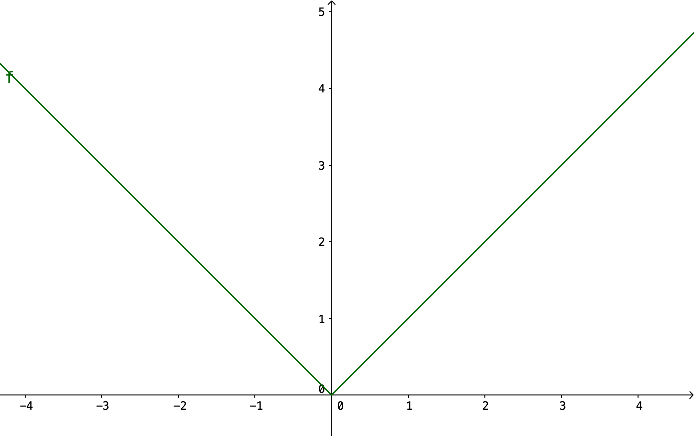
Önnur gaffalforskrifarföll hafa allt aðra framsetningu, það er allt háð því hvernig fallið hegðar sér og á hvaða bilum. Engin takmörk eru fyrir því hversu oft fallið breytir um hegðun eða hvernig það hegðar sér á hverju bili.
1.6. Ummyndanir falla
Ummyndun er þegar fall er tekið og því breytt smávægilega. Við skulum líta á nokkrar ummyndanir. Ef þú getur gert það við mynd í Word, eru allar líkur á að það falli hér undir.
1.6.1. Hliðrun
Hægt er að hliðra falli lárétt meðfram \(x\)-ásnum (til hægri eða vinstri) og lóðrétt meðfram \(y\)-ásnum (upp og niður). Jafnvel væri hægt að blanda þessu saman. Fallið heldur þá lögun sinni en staðsetning þess í hnitakerfinu breytist.
Lóðrétt hliðrun
Hér fyrir neðan má sjá fallinu \(x^2\) hliðrað upp og niður um 2, meðfram \(y\)-ásnum.
{kind=link}
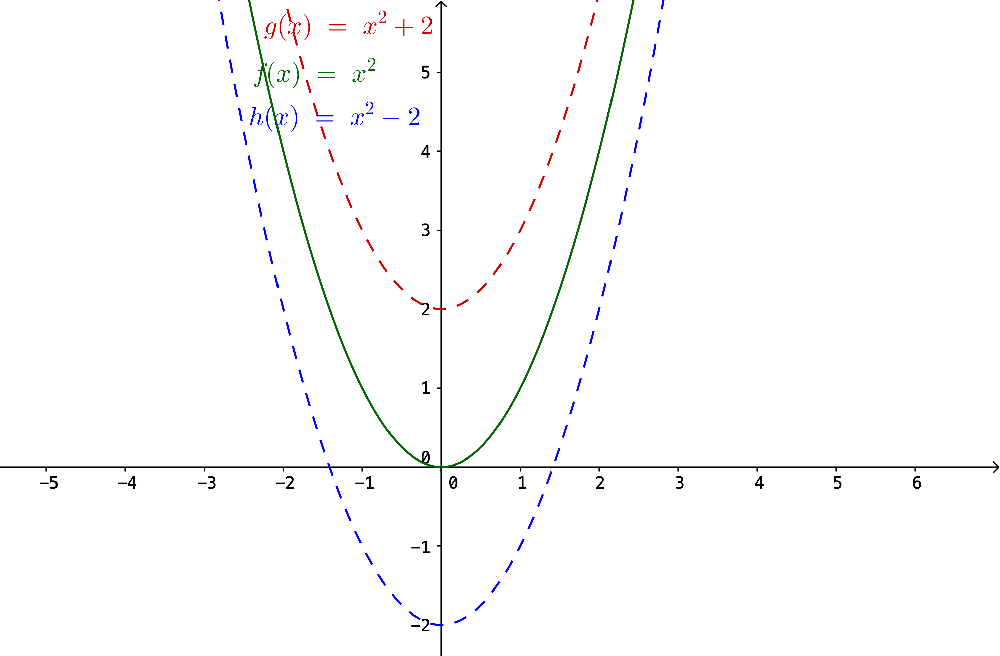
Almennt gildir fyrir fallið \(y=f(x)\) að \(y=f(x)+a\) hliðrar fallinu upp um \(a\) ef \(a>0\) en niður um \(a\) ef \(a<0\).
Lárétt hliðrun
Hér fyrir neðan er sama falli hliðrað til hægri og vinstri um 2, meðfram \(x\)-ásnum.
{kind=link}
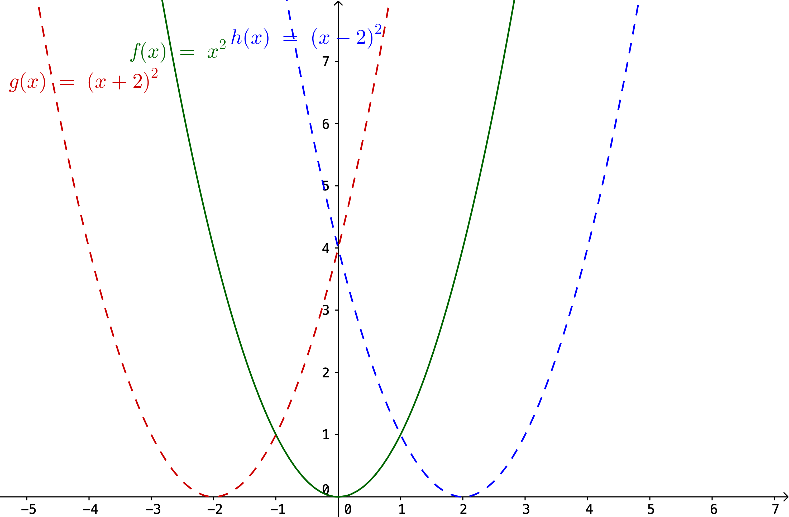
Almennt gildir fyrir fallið \(y=f(x)\) að \(y=f(x-b)\) hliðrar fallinu til hægri um \(b\) ef \(b>0\) en til vinstri um \(b\) ef \(b<0\).
1.6.2. Skölun með jákvæðum fasta
Hægt er að skala fall, bæði lárétt og lóðrétt, með margföldun eða deilingu með jákvæðum fasta. Fallið heldur þá einhverjum af rúmfræðilegum eiginleikum sínum en útlit þess breytist að því leyti að annað hvort skreppur það saman eða glennist í sundur, í einhverjum skilningi.
Athugasemd
Ef skalað er með fastanum \(a \in \mathbb{R}_+\) gildir almennt að…
…ef \(0<a<1\) þá nefnist skölunin herping.
…ef \(a>1\) þá nefnist skölunin stríkkun.
Lóðrétt skölun
Hér fyrir neðan má sjá lóðrétta skölun á fallinu \(f(x)=x^2\), annars vegar stríkkun, þ.e. \(h(x)=2x^2\) og hins vegar herpingu, þ.e. \(g(x)=\frac{1}{2}x^2\)
{kind=link}
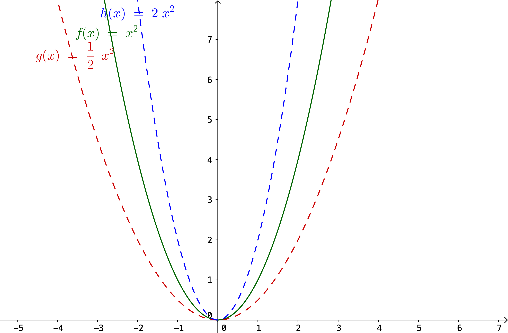
Almennt gildir fyrir fallið \(y=f(x)\) að \(y=af(x)\) er lóðrétt stríkkun ef \(a>1\) lóðrétt herping ef \(0<a<1\).
Lárétt skölun
Hér fyrir neðan má sjá lárétta skölun á fallinu \(f(x)=\sqrt{x}\), annars vegar stríkkun, þ.e. \(h(x)=\sqrt{2x}\) og hins vegar herpingu, þ.e. \(g(x)=\sqrt{\frac{1}{2}x}\)
{kind=link}
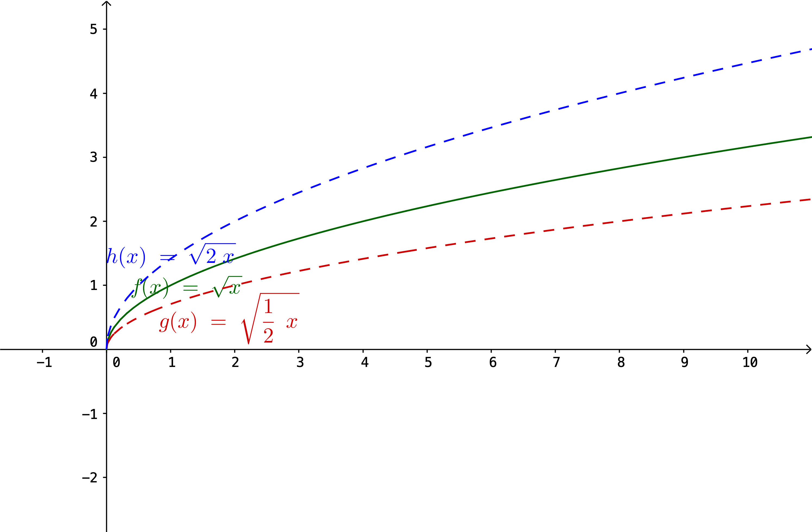
Almennt gildir fyrir fallið \(y=f(x)\) að \(y=f(ax)\) er lárétt stríkkun ef \(a>1\) en lárétt herping ef \(0<a<1\).
1.6.3. Speglun
Hægt er að spegla fall bæði um \(x\)-ásinn og \(y\)-ásinn.
Athugasemd
Almennt gildir fyrir fallið \(y=f(x)\) að…
… \(y=-f(x)\) speglar fallið um \(x\)-ásinn.
… \(y=f(-x)\) speglar fallið um \(y\)-ásinn.
Dæmi
Lítum á fallið \(f(x)=x^3+1\). Finnum speglun þess um \(x\)-ásinn og \(y\)-ásinn.
Lausn
Á myndinni má sjá speglun fallsins um \(x\)-ásinn, \(g(x)=-(x^3+1)\) í fjólubláu og speglun þess um \(y\)-ásinn, \(h(x)=(-x)^3+1\) í gulu.
{kind=link}
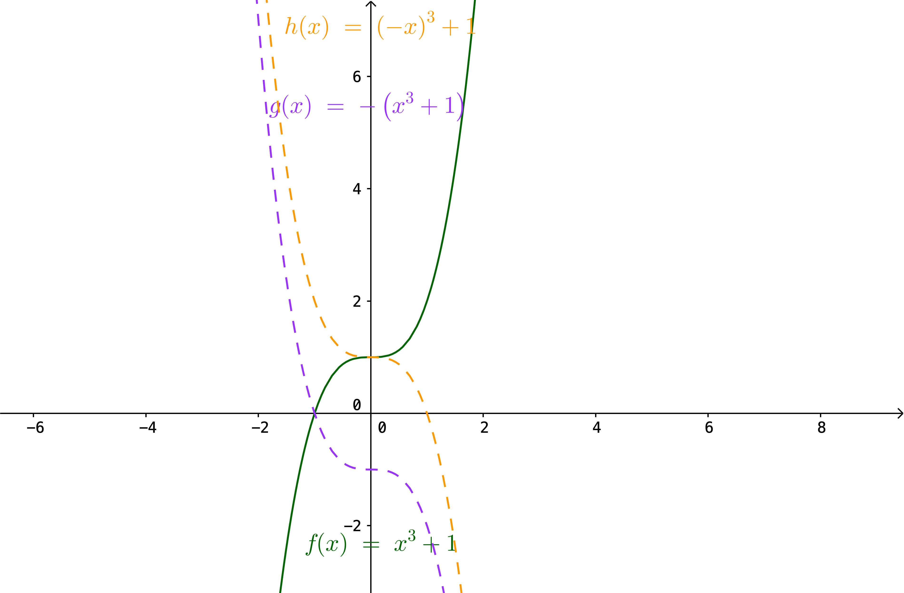
1.7. Hornaföllin
Hornaföllin eru gríðarlega mikilvæg í stærðfræði og skyldum fögum, eins og eðlisfræð, verkfræði o.s.frv.
1.7.1. Radíanar
Radíanar eru mælieining á stærð horns. Algengt er að nemendur læri fyrst að nota gráður til að mæla stærð horna en í mörgum kringumstæðum er eðlilegra og þægilegra að nota radíana, vegna tengingar þeirra við einingahringinn, og verður það gert hér.
Athugasemd
Einn radíani er skilgreindur á þá vegu að fyrir gefið horn \(\theta\) þá er bogalengd þess í einingahringnum \(s\) radíanar. Styttingin rad er oft notuð fyrir radíana.
{kind=link}
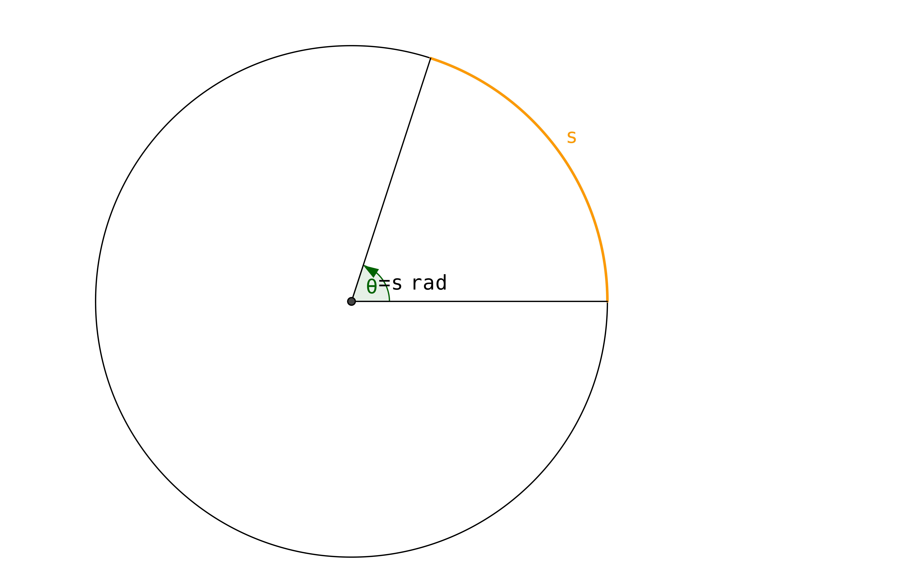
Gott getur verið að kannast við algengar hornastærðir.
Deg |
Rad |
Deg |
Rad |
|
|---|---|---|---|---|
\(0\) |
\(0\) |
\(120\) |
\(2\pi/3\) |
|
\(30\) |
\(\pi/6\) |
\(135\) |
\(3\pi/4\) |
|
\(45\) |
\(\pi/4\) |
\(150\) |
\(5\pi/6\) |
|
\(60\) |
\(\pi/3\) |
\(180\) |
\(\pi\) |
|
\(90\) |
\(\pi/2\) |
\(360\) |
\(2\pi\) |
1.7.2. Kósínus, sínus og einingahringurinn
Hornaföllin \(\cos(x)\) og \(\sin(x)\) eða kósínus og sínus eru undirstaðan í öllum hornafallareikningi og öll önnur hornaföll, eins og \(\tan(x)\), \(\cot(x)\), \(\sec(x)\) og \(\csc(x)\) má búa til út frá þeim, eins og sjá má hér að neðan.
Athugasemd
\(\tan(x) = \frac{\sin(x)}{\cos(x)}\)
\(\cot(x) = \frac{\cos(x)}{\sin(x)}\)
\(\csc(x) = \frac{1}{\sin(x)}\)
\(\sec(x) = \frac{1}{\cos(x)}\)
Hornaföllin og einingahringurinn eru nátengd fyrirbæri og má skilgreina kósínus og sínus með því að nota einingahringin á þessa vegu: Fyrir punktinn \(A=(x,y)\) á einingahringnum og hornið \(\theta\) sem myndast á milli \(x\)-ássins og \(A\) þá er \(\cos(\theta)=x\) og \(\sin(\theta)=y\).
Gott getur verið að kannast við helstu hornafallastærðirnar.
Athugasemd
\(\theta^\circ\) |
\(\theta \text{ rad}\) |
\(\cos(\theta)\) |
\(\sin(\theta)\) |
|---|---|---|---|
\(0\) |
\(0\) |
\(1\) |
\(0\) |
\(30\) |
\(\frac{\pi}{6}\) |
\(\frac{\sqrt{3}}{2}\) |
\(\frac{1}{2}\) |
\(45\) |
\(\frac{\pi}{4}\) |
\(\frac{\sqrt{2}}{2}\) |
\(\frac{\sqrt{2}}{2}\) |
\(60\) |
\(\frac{\pi}{3}\) |
\(\frac{1}{2}\) |
\(\frac{\sqrt{3}}{2}\) |
\(90\) |
\(\frac{\pi}{2}\) |
\(0\) |
\(1\) |
Hornaföllin má einnig skilgreina sem hlutfall milli hliða í rétthyrndum þríhyrningi (eins og betur kemur í ljós þegar við skoðum reglu Pýþagórasar fyrir hornaföllin).
Athugasemd
Látum \(T\) vera þríhyrning með langhlið að lengd \(L\), mótlæga skammhlið að lengd \(M\) og aðlæga skammhlði að lengd \(A\) og hornið \(0 \text{ rad} <\theta < \frac{\pi}{2} \text{ rad}\).
{kind=link}
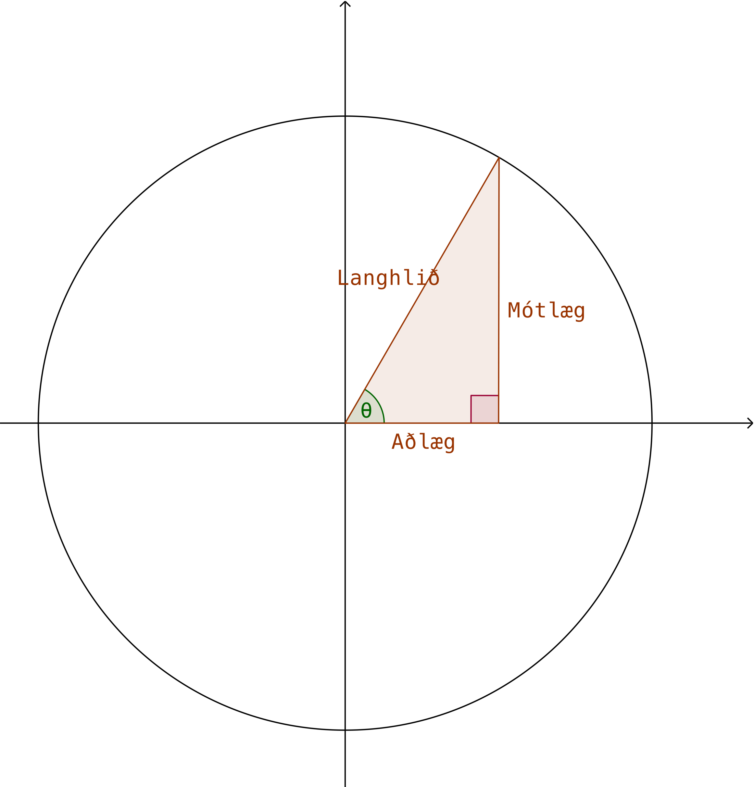
Þá gildir að:
\(\sin(\theta)=\frac{M}{L}\)
\(\cos(\theta)=\frac{A}{L}\)
\(\tan(\theta)=\frac{M}{A}\)
\(\csc(\theta)=\frac{L}{M}\)
\(\sec(\theta)=\frac{L}{A}\)
\(\cot(\theta)=\frac{A}{M}\)
1.7.3. Hornafallareglur
Hornafallareglur (e. trigonometric identities) koma oft að góðum notum við ýmsa útreikninga með hornaföllunum.
Regla Pýþagórasar
Reglu Pýþagórasar kannast flestir nemendur eflaust við, en hún lýsir tengslum milli hliðarlengda rétthyrnds þríhyrnings.
Regla Pýþagórasar
Í rétthyrndum þríhyrning \(\Delta ABC\), með langhliðina \(C\), gildir að
Líkt og áður látum við \(A=(x,y)\) vera punkt á einingahringnum og hornið sem myndast á milli \(x\)-ássins og \(A\) heita \(\theta\). Teiknum rétthyrndan þríhyrning með hornpunkta í \((0,0)\), \((x,0)\) og \(A\).
{kind=link}
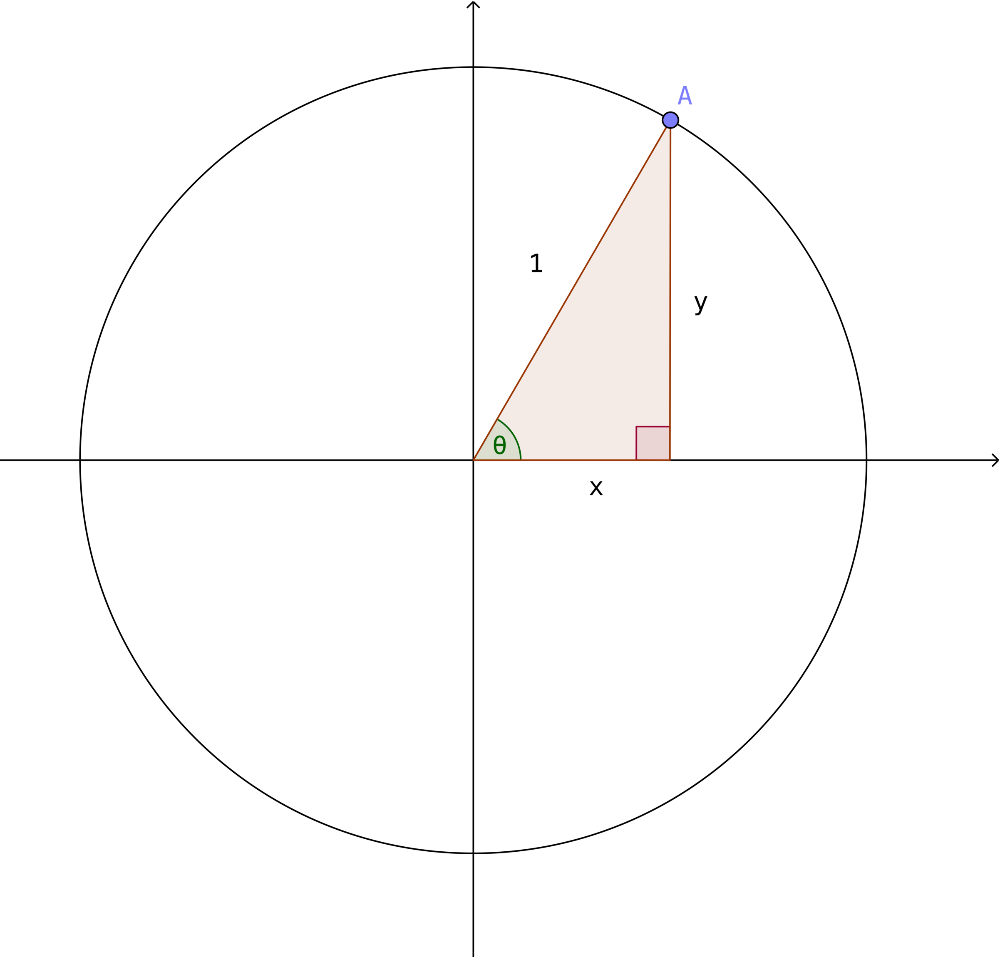
Ljóst er að skammhliðar hans munu hafa lengdina \(x\) annars vegar og \(y\) hins vegar og langhlið hans lengdina \(1\). Regla Pýþagórasar segir þá að
Við getum nú nýtt okkur skilgreininguna að \(\cos(\theta)=x\) og \(\sin(\theta)=y\) til að sýna að
gildi almennt, óháð gildinu á \(\theta\), eins og sést hér að neðan.
Hægt er að útvíkka regluna þannig að hún virki fyrir aðra hringi en einingahringinn. Látum \(x^2+y^2=r^2\) vera hring með miðju í \((0,0)\) og radíus \(r\). Látum nú punktinn \(A=(x,y)\) vera á hringnum og hornið sem myndast á milli \(x\)-ássins og \(A\) heita \(\theta\). Þá gildir að \(x=r\cos(\theta)\) og \(y=r\sin(\theta)\) og samkvæmt reglu Pýþagórasar fæst að
samkvæmt því sem við leiddum út hér að ofan. Þetta gildir fyrir öll \(r\) og óháð horninu \(\theta\).
Athugasemd
Aðrar útgáfur af reglu Pýþagórasar þar sem hornaföllin eru notuð eru t.a.m.
og
Samlagningar- og frádráttarreglur
Athugasemd
Almennt gildir að
og
Reglur um tvöföld horn
Athugasemd
Almennt gildir að
og
Aðvörun
Athugið sérstaklega að þó svo að almennt gildi \(\cos^2(\theta)+\sin^2(\theta)=1\) þá gildir ekki almennt að \(\cos^2(\theta)-\sin^2(\theta)=-1\)!
1.7.4. Gröf og lotur hornafallanna
Byrjum á því að skilgreina lotubundið fall.
Skilgreining
Fall \(f(x)\) er sagt lotubundið með lotuna \(L\) ef
fyrir öll \(k \in \mathbb{Z}\) þar sem \(L\) er minnsta mögulega talan sem uppfyllir þetta. Þá er stundum sagt að fallið sé \(L\)-lotubundið.
Kósínus og sínus
Hornaföllin \(\cos(x)\) og \(\sin(x)\) eru \(2\pi\)-lotubundin föll. Graf þeirra er bylgja sem sveiflast á milli \(-1\) og \(1\) á \(y\)-ásnum þar sem kósínusbylgjan sker \(y\)-ásinn í \((0,1)\) en sínusbylgjan sker \(y\)-ásinn í \((0,0)\).
{kind=link}
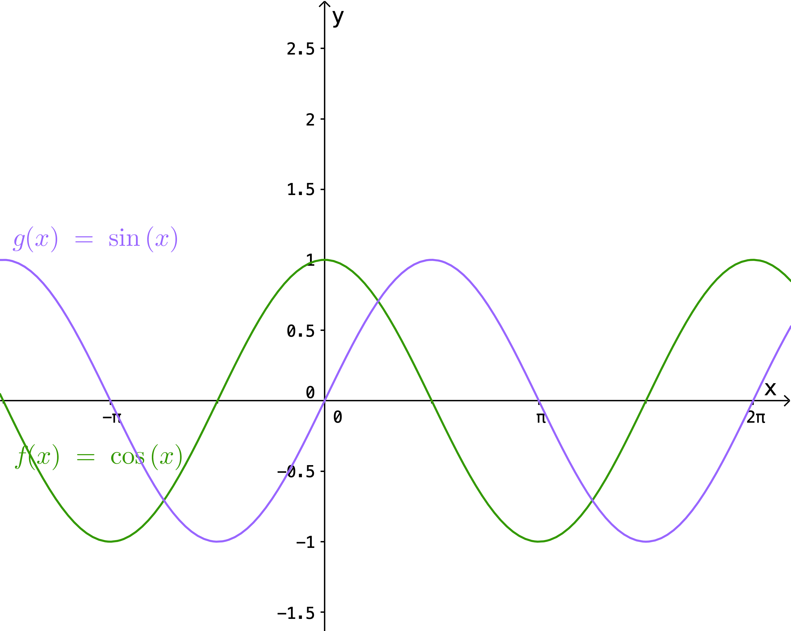
Tangens og kótangens
Föllin \(\tan(x)\) og \(\cot(x)\) eru \(\pi\)-lotubundin föll sem hafa lotubundnar lóðfellur, tangens annars vegar í \(x=\frac{\pi}{2} + k \cdot \pi\), \(k \in \mathbb{Z}\)
{kind=link}
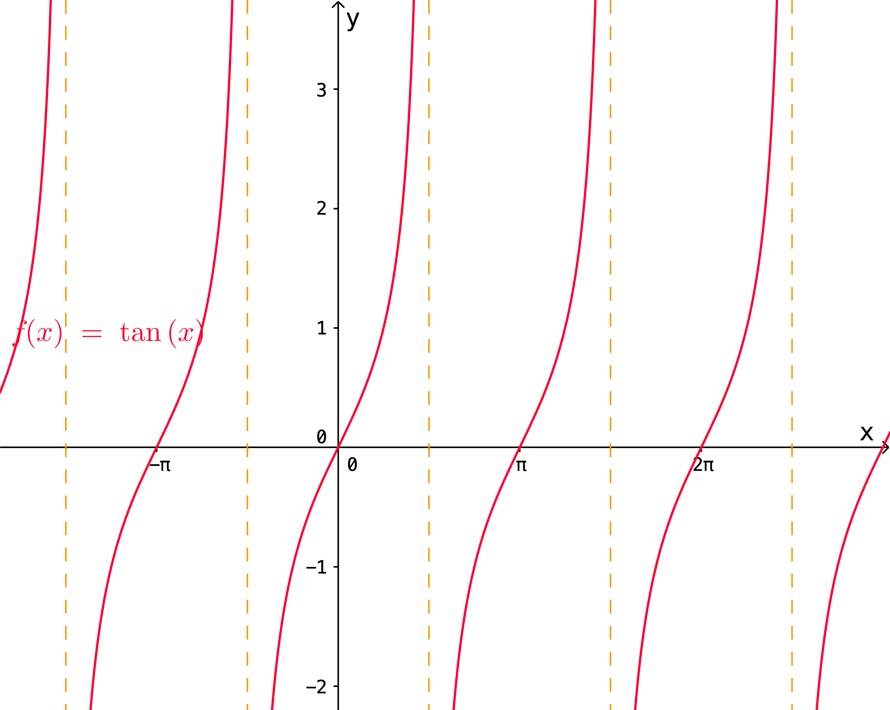
og kótangens hins vegar í \(x=0+ k \cdot \pi\), \(k \in \mathbb{Z}\).
{kind=link}
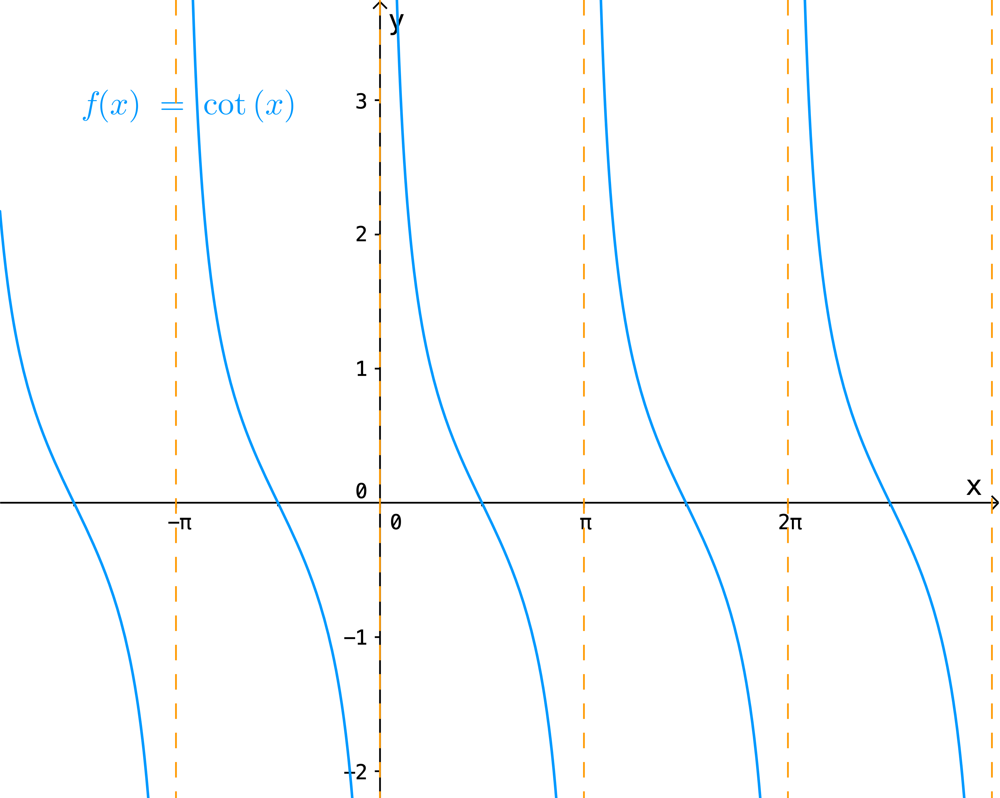
Sektan og kósekant
Föllin \(\sec(x)\) og \(\csc(x)\) eru \(2\pi\)-lotubundin föll sem hafa lotubundnar lóðfellur, sekant annars vegar í \(x=\frac{\pi}{2} + k \cdot \pi\), \(k \in \mathbb{Z}\)
{kind=link}
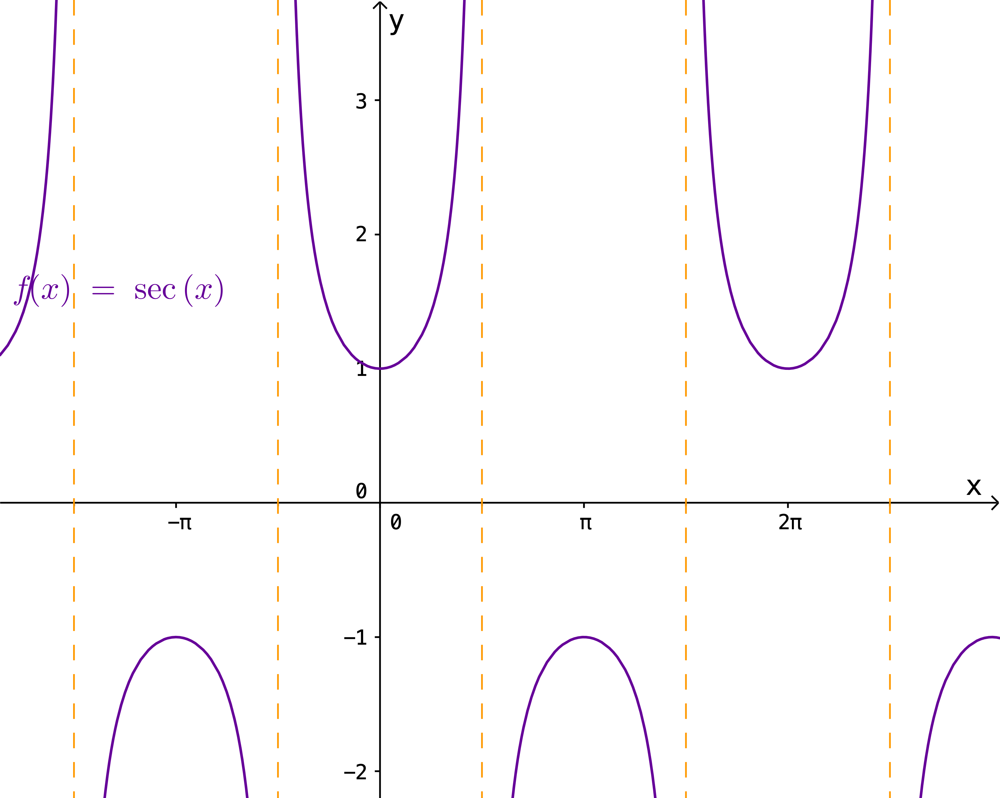
og kósekant hins vegar í \(x=0+ k \cdot \pi\), \(k \in \mathbb{Z}\).
{kind=link}
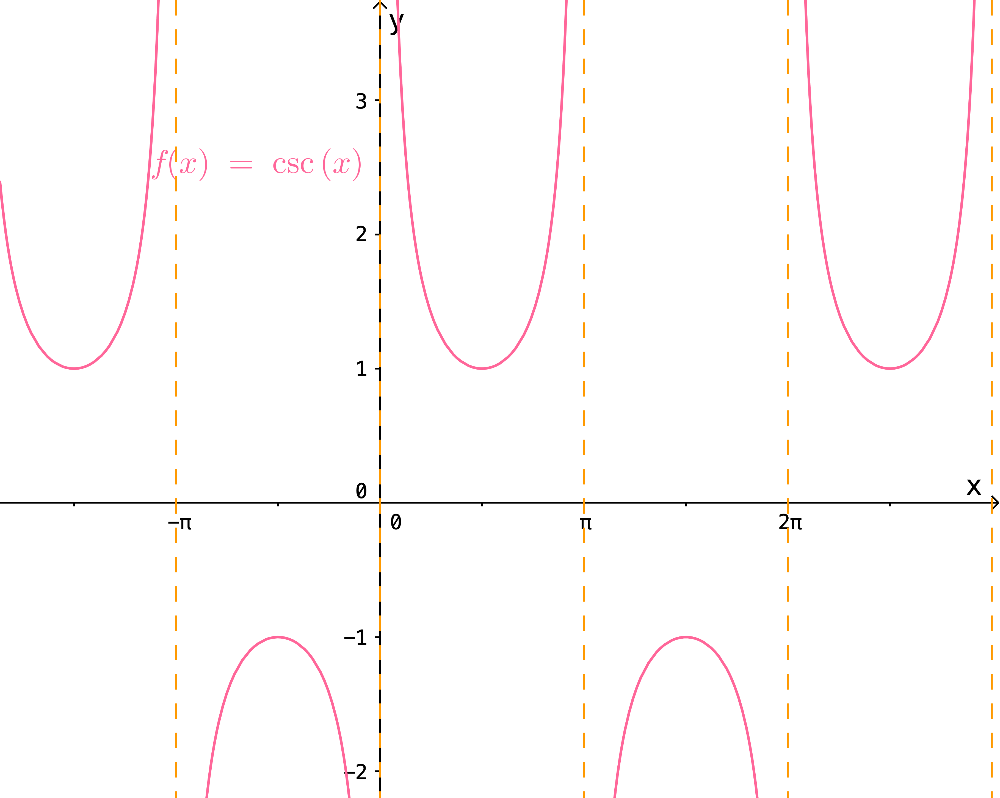
1.8. Andhverfur
Andhverfa falls er andstæða fallsins, í einhverjum skilningi, og hefur þá verkun að afturkalla það sem upprunalega fallið gerði. Sem dæmi má taka fallið \(f(x)=x^3\). Fallið tekur töluna \(x\) og hefur hana í þriðja veldi. Andhverfa þess er því \(f^{-1}(x)=\sqrt[3]{x}\), því ef inntak þess er tala í þriðja veldi þá skilar það tölunni sjálfri, veldislausri, út. Formlega má skilgreina andhverfu falls á eftirfarandi vegu.
Athugasemd
Fall \(f\) með skilgreiningarmengi \(D\) og bakmengi \(R\) á sér andhverfuna \(f^{-1}\), með skilgreiningarmengið \(R\) og bakmengið \(D\), ef \(f^{-1}\) uppfyllir að \(f^{-1}(f(x))=x\) fyrir öll \(x \in D\) og \(f(f^{-1}(y))=y\) fyrir öll \(y \in R\).
Aðvörun
Athugið að sérstaka aðgát þarf að sýna vegna ritháttsins sem notaður er fyrir andhverfur falla. Andhverfa fallið \(f^{-1}(x)\) er ekki f í mínus fyrsta veldi, þ,e, \(f^{-1}(x)\neq \frac{1}{f}\). Talan \(-1\) er eingöngu notuð hér sem andhverfutákn. Hins vegar er \(x^{-1}=\frac{1}{x}\) jafngilt x í mínus fyrsta veldi. Þarna er talan \(-1\) í veldinu á \(x\).
Ekki eru öll föll andhverfanleg, þ.e.a.s. ekki eiga öll föll sér andhverfur. Fall er andhverfanlegt ef og aðeins ef það er gagntækt, þ.e. eintækt og átækt. Til að mynda, þá er fallið \(g(x)=\sqrt{x}\) ekki andhverfa fallsins \(f(x)=x^2\) þar sem ekki er til neitt stak \(y\) í myndmengi \(f\) þannig að \(g(y)=-2\), sem brýtur í bága við skilgreininguna á andhverfu þar sem \(-2\) er í skilgreiningarmengi \(f\). Þetta er bein afleiðing þess að fallið \(x^2\) er ekki eintækt.
Athugasemd
Ýmsar aðferðir má nota til að ákvarða hvort fall sé andhverfanlegt eða ekki. Oft er auðvelt að sjá það af grafi fallsins. Ef við lítum t.a.m. á gröf fallanna \(x^2\) og \(x^3\) getum við auðveldlega séð að fallið \(x^2\) er ekki eintækt þar sem mörg \(x\)-gildi deila sama \(y\)-gildinu, t.d. er \((-2)^2=2^2=4\). Því er fallið \(x^2\) ekki andhverfanlegt. Hins vegar deila engin tvö \(x\)-gildi sama \(y\)-gildinu þegar kemur að fallinu \(x^3\). Fallið er því eintækt. Þar að auki er fallið átækt þar sem að fyrir sérhvert \(y\)-gildi er til eitthvað \(x\)-gildi þannig að \(y=x^3\). Þar með er fallið anhverfanlegt, samkvæmt því sem kom fram hér fyrir ofan.
Einföld leið til að ákvaðarða hvort fall sé eintækt er að athuga hvort til sé lárétt lína sem sker fallið oftar en einu sinni. Ef línan sker fallið oftar þá er fallið ekki eintækt.
{kind=link}
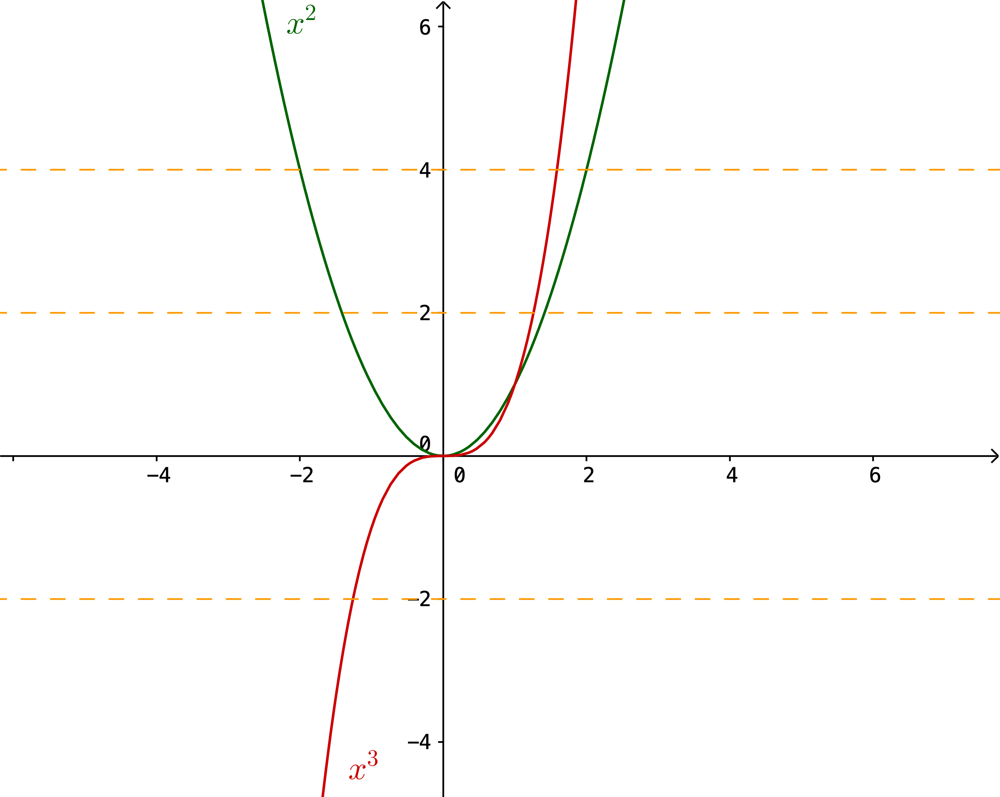
1.8.1. Að finna andhverfu
Hugsum okkur andhverfanlegt fall \(y=f(x)\). Þar sem að vörpunin er eintæk þýðir það að andhverfan úthlutar hverju \(x\) í skilgreiningarmenginu einu og aðeins einu staki \(y\) í bakmenginu. Af þessu leiðir að til að finna andhverfu fallsins má einfaldlega einangra \(x\). Þá fæst andhverfan sem fall af \(y\). Með því að skipta hlutverkum \(x\) og \(y\) í lokin fæst andhverfa fallsins sem fall af \(x\).
1.8.2. Dæmi: Finna andhverfu
Dæmi
Lítum á fallið \(f(x)=x^3+4\). Fallið er gagntækt svo það er andhverfanlegt. Finnum andhverfu þess.
Lausn
Skiptum \(f(x)\) út fyrir \(y\) og einangrum svo \(x\).
Með því að víxla breytunum fæst að fallið \(f^{-1}(x)=\sqrt[3]{x-4}\) er andhverfa fallsins \(f(x)\).
1.8.3. Graf andhverfu
Andhverfur hafa þann rúmfræðilega eiginleika að þær eru speglun fallsins um línuna \(y=x\), sem gerir það að verkum að þægilegt er að teikna graf þeirra.
1.8.4. Dæmi: Graf andhverfu
Dæmi
Höldum áfram með dæmið hér að ofan teiknum graf fallsins \(f(x)=x^3+4\) og andhverfu þess, \(f^{-1}(x)=\sqrt[3]{x-4}\), auk línunnar \(y=x\).
Lausn
{kind=link}
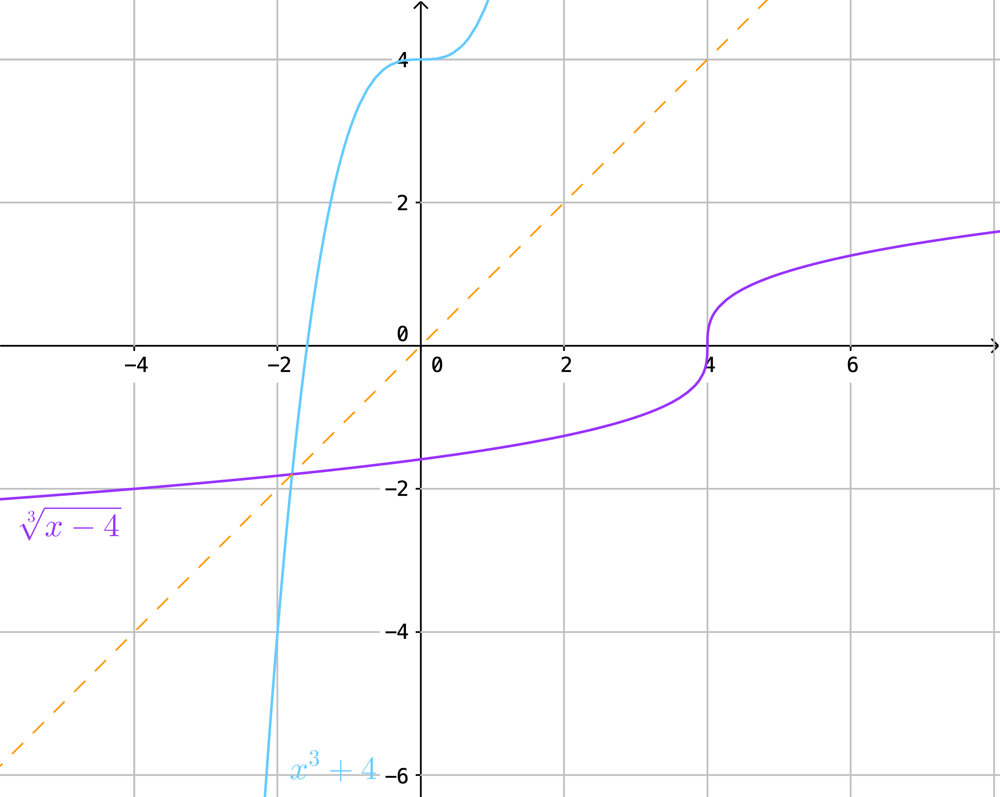
1.8.5. Takmörkun skilgreiningarmengis
Unnt er að gera óandhverfanleg föll andhverfanleg með því að takmarka skilgreiningarmengi fallsins þannig að það verði eintækt.
1.8.6. Dæmi: Takmörkun skilgreiningarmengis
Dæmi
Takmörkum skilgreiningarmengi fallsins \(f(x)=x^2\) við \(\mathbb{R}_+ \cup \{0\}\), þ.e. jákvæðar rauntölur eða 0. Finnum andhverfu þess.
Lausn
Þar sem við þessa takmörkum verður fallið eintækt og á sér þá andhverfuna \(\sqrt{x}\).
{kind=link}
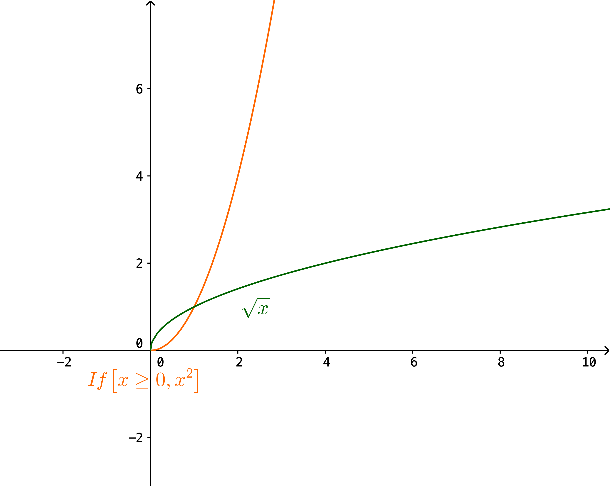
1.8.7. Andhverfur hornafallanna
Þar sem að hornaföllinn eru lotubundin, gefur það til kynna að þau séu ekki eintæk og þar af leiðandi ekki andhverfanleg nema skilgreiningarmengi sé takmarkað með þeim afleiðingum að þau verði eintæk.
Athugasemd
Hornafall |
\(\sin(x)\) |
\(\cos(x)\) |
\(\tan(x)\) |
Tákn andhverfu |
\(\sin^{-1}(x)\) |
\(\cos^{-1}(x)\) |
\(\tan^{-1}(x)\) |
Skilgreiningarmengi |
\([-\frac{\pi}{2},\frac{\pi}{2}]\) |
\([0,\pi]\) |
\(]-\frac{\pi}{2},\frac{\pi}{2}[\) |
Hornafall |
\(\cot(x)\) |
\(\csc(x)\) |
\(\sec(x)\) |
Tákn andhverfu |
\(\cot^{-1}(x)\) |
\(\csc^{-1}(x)\) |
\(\sec^{-1}(x)\) |
Skilgreiningarmengi |
\([0,\pi]\) |
\([-\frac{\pi}{2},\frac{\pi}{2}],x\neq 0\) |
\([0,\pi],x \neq \frac{\pi}{2}\) |
Svo þegar við leysum jöfnu sem krefst þess að andhverft hornafall er notað, verður að geta þess að stefnuhornið sé innan takmarkaða skilgreiningarmengisins.
1.8.8. Dæmi: Andhverfa hornafalls
Dæmi
Leysum jöfnuna
með því að nota andhverfan kósínus.
Lausn
Til eru óendanlega mörk stefnuhorn \(\theta\) sem uppfylla jöfnuna
En ef við beitum andhverfum kósínus beggja vegna jafnaðarmerkisins fæst
sem gefur
þar sem það er eina gildið á \(\theta\) sem uppfyllir jöfnuna og er innan takmarkaða skilgreiningarmengis kósínus \([0,\pi]\).
1.9. Vísiföll og logar
1.9.1. Vísisföll
Tilkoma vísisfalla var gríðarlega mikilvæg fyrir getu fólks til að reikna og spá fyrir um vöxt ýmissa stærða, eins og t.d. fólksfjölda, bankainnistæðu o.s.frv.
Athugasemd
Fall á forminu
þar sem \(b>0\) er einhver fasti, nefnist vísisfall með grunntölu \(b\).
Aðvörun
Munum að \(0^0\) er ekki skilgreint þar sem bæði eru rök fyrir því að það ætti að taka gildið 0 og 1.
Til eru óendanlega mörg vísisföll þar sem \(b\) má vera hvaða fasti sem er. Einfalt er að skilgreina veldishafningu fyrir náttúrulegar tölur og útvíkka svo hugtakið fyrir neikvæðar heiltölur og svo ræðar tölur. Það getur hins vegar reynst erfitt að skilgreina hvað átt er við með \(b^x\) þegar \(x\) er óræð tala, sér í lagi á þessu stigi, en við látum okkur nægja í bili að segja að sérhverja óræða \(x\) tölu má nálga eins vel og vera má með ræðri tölu \(\tilde{x}\) og því betri nálgun sem valin er því nær kemst \(b^{\tilde{x}}\) því að vera \(b^x\).
Athugasemd
Frægasta vísisfallið er tvímælalaust veldisvísisfallið \(e^x\) þar sem \(e\) er tala Eulers.
Aðvörun
Athugið að veldisföll og vísisföll eru frábrugðin að því leyti hvort það er fasti í stofninum og breyta í veldinu eða breta í stofninum og fasti í veldinu.
er veldisfall af því að þar er breytan í stofninum og fastinn \(b\) í veldinu.
er vísisfall af því að þar er fastinn í stofninum og breytan \(x\) í veldinu.
1.9.2. Graf vísisfalla
Fyrir hvaða jákvæða grunnfasta \(b\) sem er, þar sem \(b\neq 1\) hefur fallið \(f(x)=b^x\) skilgreiningarmengið \(\mathbb{R}\) og bakmengið \(\mathbb{R}_+\).
Athugasemd
Ef \(b>1\) þá er fallið vaxandi og nálgast \(0\) ef \(x \rightarrow -\infty\) en ef \(x \rightarrow \infty\) þá nálgast fallið \(\infty\).
Ef \(0<b<1\) þá er fallið minnkandi og nálgast \(0\) ef \(x \rightarrow \infty\) en ef \(x \rightarrow -\infty\) þá nálgast fallið \(\infty\).
{kind=link}
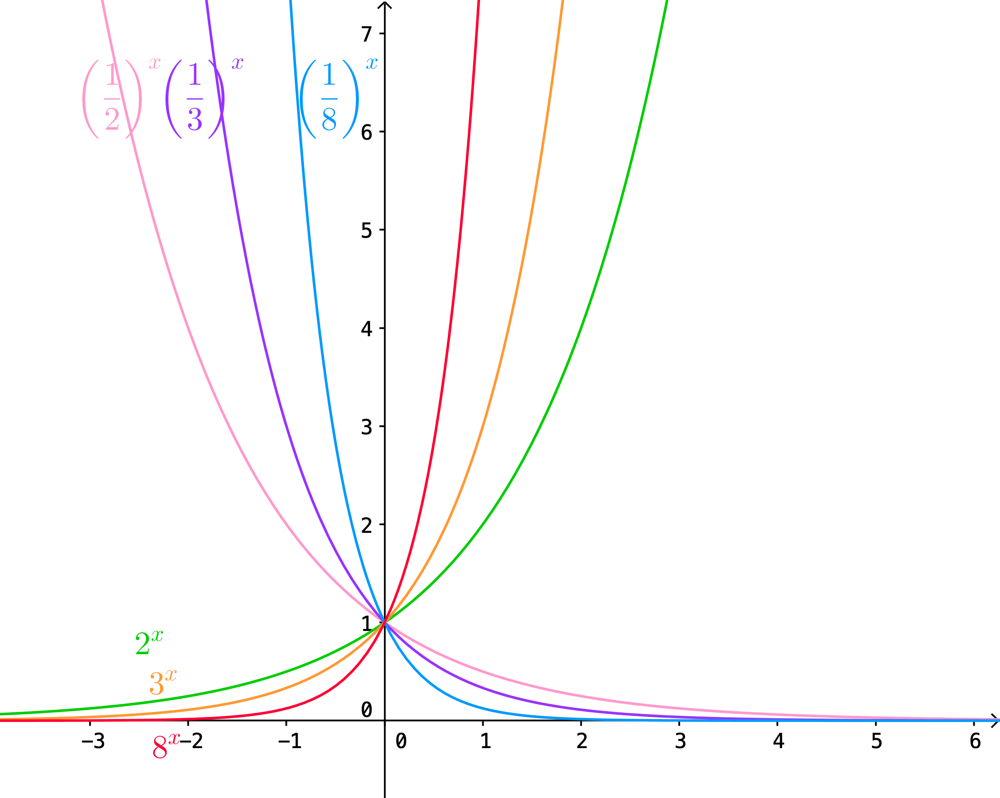
1.9.3. Fastinn \(e\) og veldisvísisfallið
Fastinn \(e \approx 2,718282\), einnig kallaður tala Eulers, er ein frægasta óræða tala stærðfræðinnar. Hann birtist t.a.m. í veldisvísifallinu \(e^x\), sem er reglulega notað af vísindamönnum og sérfræðingum til að reikna út vöxt ýmissa stærða í náttúrunni og samfélaginu.
Athugasemd
Hægt er að túlka fastann \(e\) sem gildið sem talan \(\left(1+\frac{1}{m}\right)^m\) tekur þegar \(m \rightarrow \infty.\)
Veldisvísisfallið hefur skilgreiningarmengið \(\mathbb{R}\) og myndmengið \(\mathbb{R}_+\). Þar sem \(e>1\) þá er fallið vaxandi og stefnir á 0 þegar \(x \rightarrow -\infty\) og á \(\infty\) þegar \(x \rightarrow \infty\).
{kind=link}
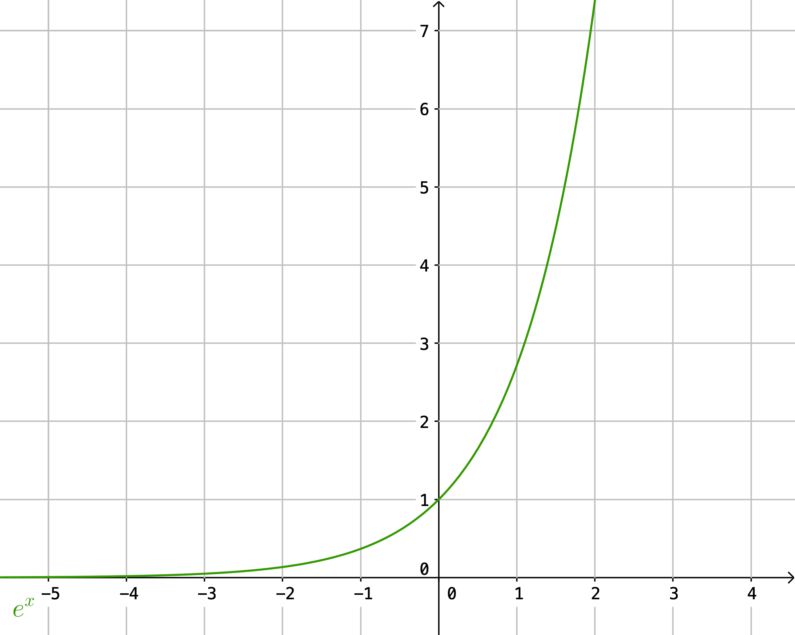
Athugasemd
Það var svissneski stærðfræðingurinn Leonhard Euler sem gaf fastanum fræga stafinn \(e\) til auðkenningar árið 1720. Algengur misskilningur er að hann hafi fundið töluna, en talan hafði verið þekkt um nokkra hríð. Hann leiddi hins vegar út mikilvæga tengingar milli hennar og logra.
{kind=link}
Athugasemd
Veldareglur Hér eru \(a>0\) og \(b>0\) en \(x\) og \(y\) eru rauntölur.
\(b^x \cdot b^y = b^{x+y}\)
\(\frac{b^x}{b^y} = b^{x-y}\)
\((b^x)^y = b^{x \cdot y}\)
\((ab)^x=a^x b^x\)
\(\frac{a^x}{b^x}=\left(\frac{a}{b}\right)^x\)
1.9.4. Lograr
Andhverfur vísisfalla eru lograr og fastinn \(b\) í stofni vísisfallsins skilgreinir stofn lograns \(\log_b(x)\). Almennt gildir fyrir \(a,b,c \in \mathbb{R}\) að ef \(a^b = c\) þá er \(\log_a(c)=b\).
Dæmi
Reiknum \(\log_2(8)\).
Lausn
Lítum á vísisfallið \(2^x\) og samsvarandi logra \(\log_2(x)\). Þar sem \(2^3=8\) þá er \(\log_2(8)=3\).
Athugasemd
Mest notaði logrinn er tvímælalaust náttúrulegi logrinn \(\log_e{x}\), sem yfirleitt er skrifaður sem \(\ln(x)\) til styttingar. Hann er andhverfa veldisvísisfallsins \(e^x\). Skilgreiningarmengi hans er myndmengi veldisvísisfallsins, þ.e. \(\mathbb{R}_+\) og myndmengi hans er skilgreiningarmengi veldisvísisfallsins, þ.e. \(\mathbb{R}\).
{kind=link}
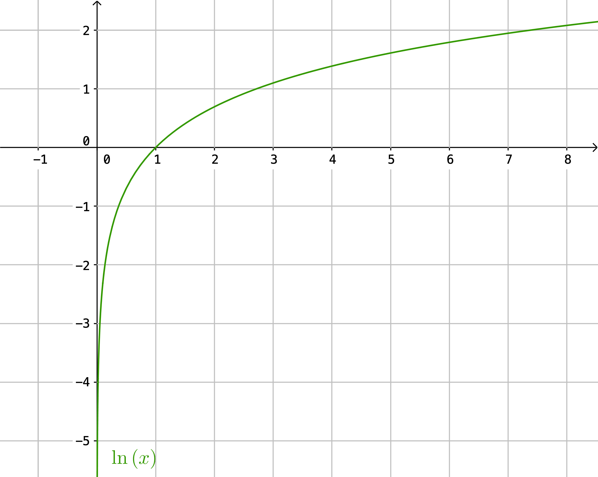
Eins og sést af myndinni er náttúrulegi logrinn vaxandi fall sem stefnir á \(- \infty\) þegar \(x \rightarrow 0\) en þegar \(x\rightarrow \infty\) þá stefnir hann á \(\infty\).
Almennt gildir, fyrir \(b>0\), \(b \neq 1\) að föllin \(f(x)=b^x\) og \(g(x)=\log_b(x)\) eru samhverf um línuna \(y=x\) og á það ekki síst við um náttúrulega logrann og veldisvísisfallið.
{kind=link}
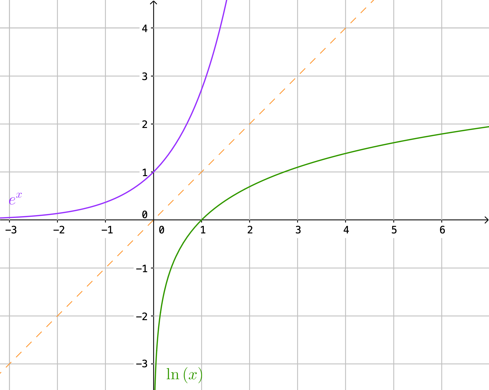
Lograreglur
Margföldunar-, kvóta- og veldareglur
\(\log_b(ac)=\log_b(a)+\log_b(c)\)
\(\log_b(\frac{a}{c})=\log_b(a)-\log_b(c)\)
\(\log_b(a^r))=r\log_b(a)\)
Reglur um lograstofn.
Látum \(a,b>0\) og \(a\neq 1\), \(b\neq 1\).
\(a^x = b^{x\log_b(a)}\) fyrir sérhverja rauntölu \(x\).
\(\log_a(x)=\frac{\log_b(x)}{\log_b(a)}\) fyrir sérhverja jákvæða rauntölu \(x\).
1.9.5. Breiðbogaföllin
Breiðbogaföllin hafa sama rithátt og hornaföllin nema þau fá viðskeytið \(h\), sem stendur fyrir hyperbolic á ensku. Hægt er að nota veldisvísisfallið til þess að skilgreina þau.
Athugasemd
\(\cosh(x)=\frac{e^x+e^{-x}}{2}\)
\(\sinh(x)=\frac{e^x-e^{-x}}{2}\)
\(\tanh(x)=\frac{\sinh(x)}{\cosh(x)}=\frac{e^x-e^{-x}}{e^x+e^{-x}}\)
\(\text{csch}(x)=\frac{1}{\sinh(x)}=\frac{2}{e^x-e^{-x}}\)
\(\text{sech}(x)=\frac{1}{\cosh(x)}=\frac{2}{e^x+e^{-x}}\)
\(\coth(x)=\frac{\cosh(x)}{\sinh(x)}=\frac{e^x+e^{-x}}{e^x-e^{-x}}\)
Breiðbogaföllunum \(\cosh(x)\), \(\sinh(x)\) og \(\tanh(x)\) bregður talsvert oftar fyrir en hinum og er því ágætt að kannst við graf þeirra.
{kind=link}
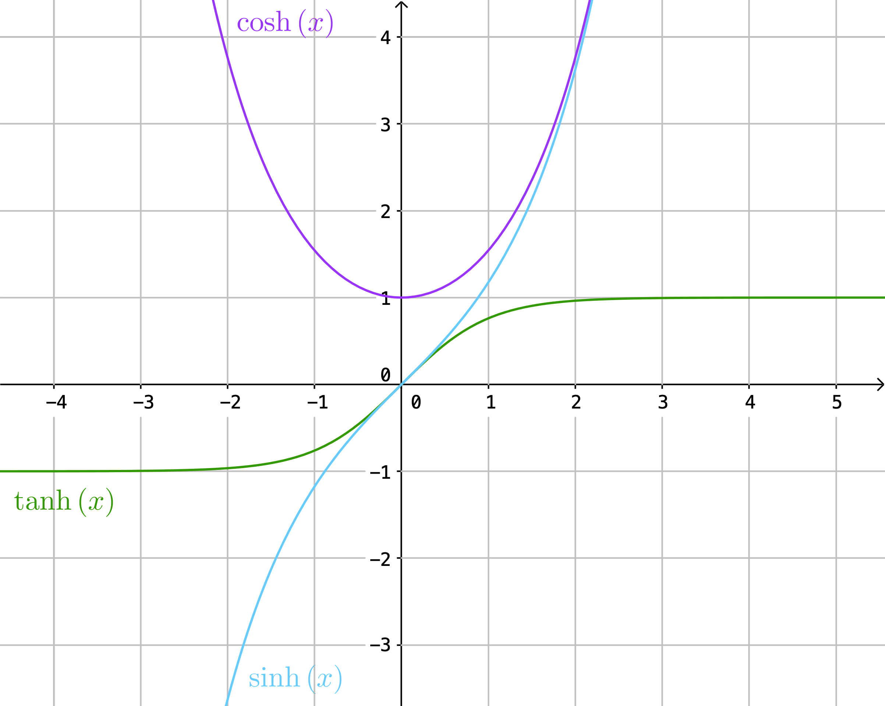
Breiðbogareglur
\(\cosh(-x)=\cosh(x)\)
\(\sinh(-x)=-\sinh(x)\)
\(\cosh(x)+\sinh(x)=e^x\)
\(\cosh(x)-\sinh(x)=e^{-x}\)
\(\cosh^2(x)-\sinh^2(x)=1\)
\(1-\tanh^2(x)=\text{sech}^2(x)\)
\(\coth^2(x)-1=\text{csch}^2(x)\)
\(\sinh(x \pm y)=\sinh(x)\cosh(y)\pm \cosh(x)\sinh(y)\)
\(\cosh(x \pm y)=\cosh(x)\cosh(y)\pm \sinh(x)\sinh(y)\)
1.9.6. Andhverfur breiðbogafallanna
Athugasemd
Hornafall |
\(\sinh(x)\) |
\(\cosh(x)\) |
\(\tanh(x)\) |
Tákn andhverfu |
\(\sinh^{-1}(x)\) |
\(\cosh^{-1}(x)\) |
\(\tanh^{-1}(x)\) |
Formúla |
\(\ln(x+\sqrt{x^2+1})\) |
\(\ln(x+\sqrt{x^2-1})\) |
\(\frac{1}{2}\ln\left({\frac{1+x}{1-x}}\right)\) |
Hornafall |
\(\coth(x)\) |
\(\text{csc}(x)\) |
\(\text{sec}(x)\) |
Tákn andhverfu |
\(\coth^{-1}(x)\) |
\(\text{csch}^{-1}(x)\) |
\(\text{sec}^{-1}(x)\) |
Formúla |
\(\frac{1}{2}\ln\left({\frac{x+1}{x-1}}\right)\) |
\(\ln\left(\frac{1}{x}+\frac{\sqrt{1+x^2}}{|x|} \right)\) |
\(\ln \left( \frac{1+\sqrt{1-x^2}}{x} \right)\) |
Athugasemd
Stundum er forsketið arc notað, í stað þess að hafa -1 í brjóstvísi, til að tákna andhverfur breiðboga- og hornafallanna. Þá er skrifað \(\text{arcsinh}(x)\) í stað \(\sinh^{-1}(x)\).